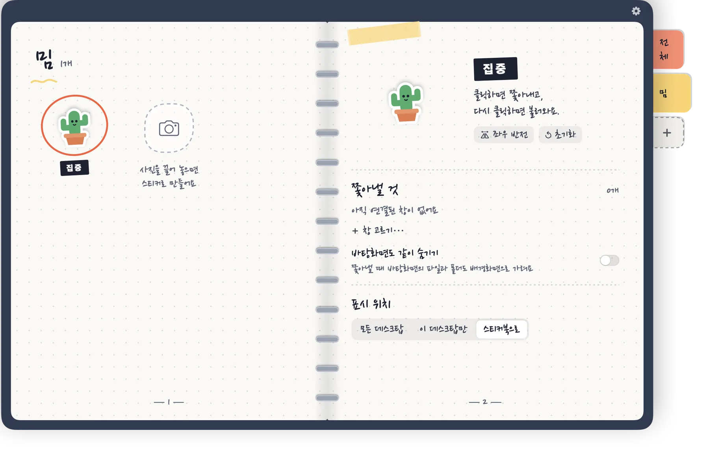

Mac 바탕화면에 붙이는 스티커 수첩
스티커를 누르면 창이 숨어요.
Shoo를 바탕화면에 붙이고 어떤 앱이나 창을 맡을지 정해 주세요. 한 번 누르면 모두 숨고, 다시 누르면 원래 자리로 돌아와요.


스티커마다 이 페이지의 일부를 맡고 있어요. 눌러 보세요.
한 번 누르면, 깨끗한 바탕화면.
해 보세요: 상황을 고르고 작은 악마를 눌러요.
눌러 봐!
나만의 스티커로
어떤 사진이든 스티커로 — 우리 강아지, 친구, 좋아하는 밈까지. 스티커마다 다른 일을 맡겨요.

사진을 수첩으로 끌어다 놓기또는 사진을 눌러도 돼요
- 사진을 끌어다 놓으면 Mac 안에서 바로 배경 제거
- 나만의 탭과 색으로 정리
- 스티커마다 숨길 창 묶음이 따로
사용 방법
세 단계면 끝. 설정 화면이 없어요.
1
스티커 떼기
수첩에서 스티커를 끌어 바탕화면 아무 곳에나 붙여요.
2
창 가리키기
‘창 고르기…’를 선택하고 이 스티커가 맡을 창이나 앱을 클릭해요.
3
클릭, Shoo!
스티커를 누르면 모두 숨고, 다시 누르면 돌아와요.
쓰기 편한 작은 디테일
모든 건 내 Mac 안, 수첩 위에서 이뤄져요.
- 창 하나 또는 앱 전체Safari, Chrome, 메모, Finder는 창 하나만 숨길 수 있고, 다른 앱은 통째로 숨어요.
- 바탕화면도 같이 숨기기스티커가 켜져 있는 동안 내 배경화면으로 바탕화면 파일을 덮어요.
- 모든 데스크탑 또는 이 데스크탑만스티커를 모든 데스크탑에 두거나 한 곳에만 둘 수 있어요.
- 수첩에서 바로 편집이름, 크기, 회전, 좌우 반전을 보이는 그 자리에서.
- 방해하지 않아요Dock, 메뉴 막대, 또는 둘 다 안 보이게 선택할 수 있어요.
- 6개 언어English, 繁體中文, 简体中文, 日本語, 한국어, ไทย.
무료로 시작
작은 악마는 무료, 모든 기능 포함. 나머지는 한 번 구입으로 열려요. 구독 없음.
 무료
무료
빨간 작은 악마
- 스티커 한 장으로 모든 기능
- 창, 앱, 바탕화면 숨기기
- 모든 언어
 전체 기능 열기
전체 기능 열기
한 번 구입
- 손그림 스티커 5종 추가
- 내 사진으로 스티커 만들기
- 나만의 분류 탭과 색
- 스티커는 원하는 만큼

내 책상은 내 것
- 계정 없음, 광고 없음, 추적 없음
- 스티커와 설정은 내 Mac에만 저장
- 사진 배경 제거는 Mac 안에서, 업로드 없음
- Shoo는 고른 창을 숨기고 불러오기만 할 뿐, 내용은 읽지 않아요
자주 묻는 질문
Safari, Chrome, 메모, Finder 제어 권한을 묻는 이유는?
그 앱들의 창 하나만 숨기기 위한 방법이에요. Shoo는 고른 창을 숨기거나 불러오라는 신호만 보내요. 허용하지 않으면 앱 전체를 숨겨요.
어떤 앱이든 숨길 수 있나요?
네. 모든 앱을 통째로 숨길 수 있어요. 창 하나만 숨기기는 Safari, Chrome, 메모, Finder를 지원해요.
구독인가요?
아니요. Shoo는 무료이고 작은 악마 스티커가 들어 있어요. 전체 기능은 한 번 구입으로 열려요.